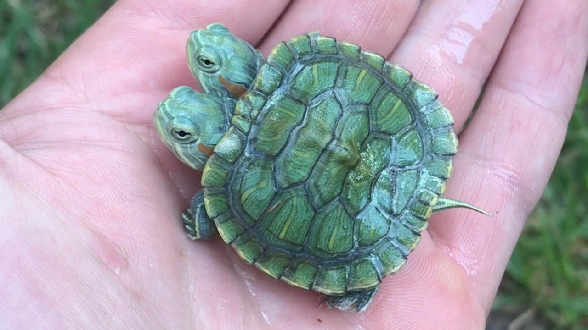

here is an amazing video of a kid saying "I Like Turtles" on Halloween.
this is a picture of the lucky two headed turtle, click on the button bellow the picture get free candy.
turtles have been really stupid lately and have been snacking on plastic straws. Click this link to help teach the turtles common sense.
help save the turtles